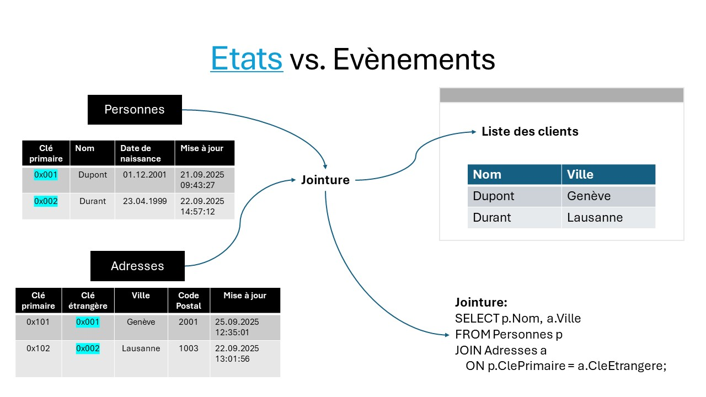
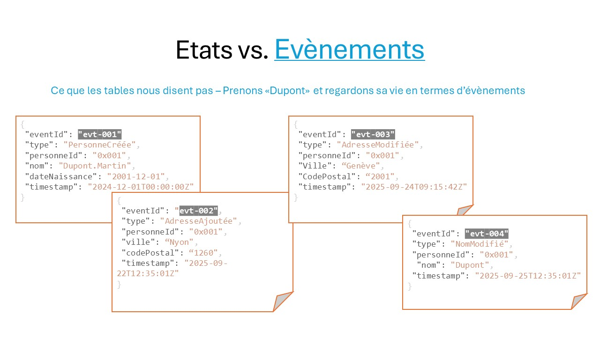
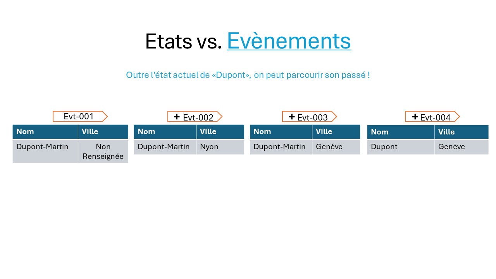

Vue d'ensemble
Ci-dessous, rappelons le modèle relationnel et comparons avec Event Sourcing. Dans la 1er cas, la source des données sont des tables relationnelles avec les opérations CRUD: créer de nouvelles données, les lire, les mettre à jour et les supprimer. En event sourcing, les données sont des évènements immuables (vous ne pouvez pas les modifier) et s'ajoutent les uns après les autres ("append").
Etats vs Evènements: la quantité d'information en fait sa qualité
Tout d'abord, à l'ancienne, on stocke l'état
Event sourcing: on stocke les évènments - les faits
Il suffit de rejouer les évènements dans l'ordre (utilisant version ou timestamp) pour reconstituer l'état
-
Les données ont du contexte: «il habite à Genève car il a changé d’adresse»
- En termes de données analytiques (BI, IA, Auditing, etc.), force est de constater que nous avons (+) plus de «données»; et également, nous ne supprimons ou ne remplaçons aucun donnée: on n’ajoute que des évènements.
-
Permettent de reconstituer l’état
- Simplement, «rejouer» les évènements dans l’ordre chronologique
-
Permettent de revenir dans le passé
- Connaitre quelle était l’état de la personne à un instant T
-
Ce sont également des logs et de l’audit
- Tous les évènements sont tracés
-
Pas de notion de modèle de données
- Une notion de «stream» d’évènements appartenant à la personne, son id.